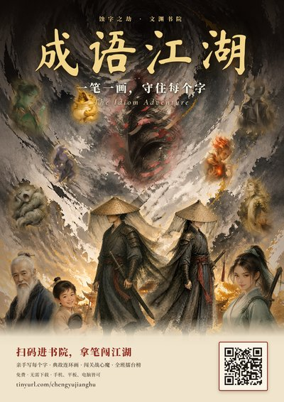

H1 / H2 ChineseH1 / H2 华文
Pilot试行中
成语江湖
Chéngyǔ Jiānghú · The Idiom Adventure
武侠成语闯关
A 武侠 rogue-lite for mastering 成语. Students recall each idiom from its meaning and handwrite every character in correct stroke order, through crossword duels, inns and chance encounters to a 心魔 boss. Missed idioms come back through spaced repetition; banked 内力 buys skills from three 武学秘籍, and an opt-in class leaderboard keeps things lively.
武侠题材的闯关游戏，帮助学生掌握成语。学生根据释义回想成语，并按正确笔顺手写每一个字，一路经过比武填字、客栈与奇遇，最后挑战心魔。答错的成语会按间隔复习再次出现；积攒的内力可在三本武学秘籍中修炼技能，自愿参加的班级排行榜让江湖更热闹。

Poster · PDF海报 · PDF